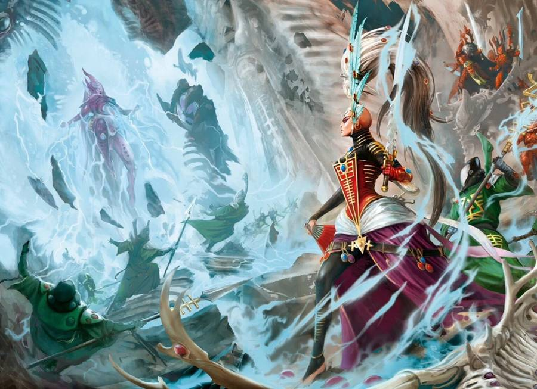

Rise of the Ynnari
| Ynnari | |
|---|---|
| The Reborn | |
 Yvraine, the Visarch and the Yncarne, the three who lead the Ynnari, in a vision recorded by the Ordo Xenos Artwork © Games Workshop | |
| Founded | 999.M41, at the Night of Revelations in Commorragh |
| Deity | Ynnead, the Whispering God |
| Leaders | The Triumvirate of Ynnead: Yvraine, Emissary of Ynnead; the Visarch; the Yncarne, Avatar of Ynnead |
| Members | Converts from the Asuryani craftworlds, the Drukhari, the Harlequins, the Corsairs and the Exodites |
| Main sources | Biel-Tan, Ulthwé, Iyanden, Altansar, Corsair fleets, renegade realms of Commorragh |
| Aim | To wake Ynnead fully and destroy Slaanesh without the death of the whole race |
| Notable members | Prince Yriel of Iyanden; the Phoenix Lord Jain Zar |
| Enemies | Slaanesh and the Keeper of Secrets Shalaxi Helbane; Asdrubael Vect of Commorragh; many craftworlds |
| Colours | Crimson and black, with bone |
The rise of the Ynnari is the emergence, from 999.M41, of the Ynnari, who call themselves the Reborn: a religious sect of the Aeldari devoted to Ynnead, the Aeldari god of the dead, who was partly awakened in that year. The sect is led by the prophet Yvraine, once a gladiator of Commorragh, whom a fragment of the god's power raised from death in the arena. Unlike the other Aeldari peoples, the Ynnari draw their members from every kindred: the craftworld Asuryani, the Drukhari, the Harlequins, the Corsairs and the Exodites. They seek to wake Ynnead fully, so that the god may defeat Slaanesh, the Chaos power that devours Aeldari souls, without the extinction of the whole race.[1][2]
The Ynnari's rise was one of the events that brought about the Era Indomitus. In their search for the relics called the Croneswords they shattered the craftworld of Biel-Tan, and with the Imperium's survivors of the Fall of Cadia they restored the primarch Roboute Guilliman to life. The Imperium has since treated them sometimes as allies of convenience and more often as enemies, while among the Aeldari they are both a source of hope and a cause of schism.[1][3]
Beliefs
[edit]The craftworlds have long held that the souls of their dead, kept from Slaanesh in the infinity circuits of the world-ships, will one day unite into a new god, Ynnead. In the traditional belief this will happen only at the Rhana Dandra, the final battle, when the last Aeldari has died: the god will then rise from the gathered souls, destroy Slaanesh, and allow the race to be reborn. The Ynnari teach that it need not wait for the death of every Aeldari. They hold that the five Croneswords of Morai-Heg, the crone goddess of fate, united in the right hands, will give their bearers power over life and death and serve as a conduit through which Ynnead may wake. They call this the Seventh Path.[2][1]

The Reborn draw on the energies released at death. In battle they are said to grow faster and stronger as those around them die, and they carry spirit stones whose souls lend them power. Many Aeldari regard this as a corruption, and say that the Ynnari are already dead inside.[1]
History
[edit]The ritual at Coheria
[edit]
For centuries the High Farseer Eldrad Ulthran of the craftworld Ulthwé had sensed a slow pulse, like a sleeping heartbeat, among the souls of his craftworld's infinity circuit. In 999.M41 he found a place to wake it: Coheria, a moon of the Imperial war world Port Demesnus, whose crystal sands were steeped in psychic residue from the fall of the Aeldari empire. With the Harlequins of the Masque of the Midnight Sorrow he began a ritual that would draw the souls of every craftworld's dead to Coheria at once, while the warriors of Ulthwé attacked Port Demesnus as a feint.[2]
The ritual was interrupted at its height by Watch Captain Artemis of the Deathwatch, who had seen through the feint. Ulthran's Harlequin allies were killed and the Farseer fled. The ritual failed, save for one mote of the god's consciousness that crossed the void to Commorragh.[2][4]
The Night of Revelations
[edit]In the arena of the Crucibael, the Succubus Yvraine, an exile of Biel-Tan who had walked every Path of the craftworlds and been a Corsair before falling to the Dark City, was fighting before a crowd that included the famed Lelith Hesperax. She had killed a captive Tyranid Hive Tyrant, been mortally wounded by Hesperax, and was dying in a last duel against a priestess of Morai-Heg when the mote of Ynnead struck her. At the threshold of death she was filled with the god's power. A wave of deathly energy swept the arena, a breach opened in the Webway and daemons poured into Commorragh. With the mysterious swordsman called the Visarch at her side, Yvraine escaped the Dark City and began to preach.[1]
Biel-Tan and the Yncarne
[edit]Yvraine travelled through the Webway to Exodite worlds and craftworlds, leaving schism behind her. On her return to Biel-Tan, as daemons of Slaanesh invaded, she drew the second Cronesword from the wraithbone spine of the craftworld. Its infinity circuit shattered, and from the vortex of souls emerged the Yncarne, the Avatar of Ynnead, bearing the great Cronesword Vilith-zhar, the Sword of Souls. The daemons were destroyed, but Biel-Tan began to break apart, and the storm of psychic energy released by its fracture joined the storms that formed the Great Rift.[1]

The Seers of Ulthwé rescued the Ynnari from Biel-Tan, which was close to civil war, and called them to account before their council along with Eldrad Ulthran. Emissaries of Altansar, whose craftworld had survived millennia in the Eye of Terror, spoke for them, and the Ynnari were allowed to leave on condition that they enter the Eye. On the crone world Belial IV they found a third Cronesword, borne up from the earth by the Yncarne in the midst of a battle against daemons and Drukhari sent by Vect. They were rescued by a delegation from Iyanden.[1]
Iyanden and Macragge
[edit]At Iyanden a Nurglite plague fleet attacked the craftworld. Prince Yriel, the craftworld's Autarch, led a boarding action against the fleet's flagship and destroyed it at the cost of his life. Yvraine burned the daemonic plague from his corpse and raised him, claiming his Spear of Twilight, which proved to be a fourth Cronesword. Yriel and his Eldritch Raiders joined the Reborn.[1]
The elders of Iyanden then concluded that the Aeldari could only survive the coming doom if humanity was given the strength to hold back Chaos. The Ynnari passed through the Webway, fighting Ahzek Ahriman's Thousand Sons on the way, to the ice moon Klaisus in the Cadia System. There they met the survivors of the Fall of Cadia under Celestine, Katarinya Greyfax and Belisarius Cawl, and led them to Macragge. In the Fortress of Hera Yvraine killed the primarch Roboute Guilliman, who had lain at the edge of death for ten thousand years, and raised him again with the power of Ynnead, while Cawl sealed him in the Armour of Fate. The Ynnari helped to clear Ultramar of Chaos and then withdrew into the Webway.[1][5]

Era Indomitus
[edit]The opening of the Rift was followed by the loss of two craftworlds, whose psychic traces faded away. Some Spiritseers believe that their souls passed to Ynnead. Many Aeldari blamed the Ynnari for both disasters. Vect, whose hold on Commorragh the Night of Revelations had shaken, set off a hidden civil war in the Dark City against pro-Ynnari factions and put a vast bounty on Yvraine's head. His agent Drazhar, Master of Blades, came within a hand's breadth of killing her at the debating fires of Saim-Hann before the Phoenix Lord Jain Zar, who had joined the Reborn, parried the blow. Despite Vect's efforts, whole sub-realms of Commorragh have passed under Ynnari control.[1]
Slaanesh released its Keeper of Secrets Shalaxi Helbane to hunt Yvraine. At the council of Aeldari kindreds she convened on the maiden world of Iathglas, Helbane attacked and was driven off by Yvraine, Jain Zar, Lelith Hesperax, the Visarch and the Yncarne fighting together. Its presence there proved to be an illusion, and it revealed that the fifth and last Cronesword had been taken to the Palace of Slaanesh. The Seventh Path now appears closed, and Yvraine has turned to seek another way to defeat the Dark Prince.[1][6]
The Ynnari have fought beside other Aeldari in defence of Iyanden and Ulthwé during the Noctis Aeterna, and continue to win converts from every kindred. In the 42nd millennium their warhosts have been reported across both halves of the Imperium.[1]
Relations with the Imperium
[edit]The Imperium owes the Ynnari the restoration of its Lord Commander, a debt that Guilliman acknowledges and the Inquisition prefers not to discuss. Imperial records describe the Ynnari as a xenos faction like any other, and most Imperial commanders have treated them as enemies. Some, especially those who served in the Celestinian Crusade, have accepted their help. The Ordo Xenos considers the sect's aims to be no concern of mankind's, except in so far as a god of the Aeldari that can wake the dead is a power to be watched.[1][3]
Timeline
[edit]The principal dated events of the rise of the Ynnari, from the first ritual to the present age.
| Date | Event | Theatre |
|---|---|---|
| 999.M41 | Eldrad Ulthran and the Harlequins begin a ritual on Coheria to wake the souls of the dead; Artemis of the Deathwatch interrupts it. | Coheria |
| 999.M41 | On the Night of Revelations, a mote of Ynnead raises Yvraine in the Crucibael arena of Commorragh; daemons enter the Dark City. | Commorragh |
| 999.M41 | Yvraine draws the second Cronesword on Biel-Tan; the Yncarne emerges and the craftworld begins to break apart. | Biel-Tan |
| 999.M41 | The Seers of Ulthwé call the Ynnari to account at the council of the craftworlds. | Craftworld Ulthwé |
| 999.M41 | Prince Yriel of Iyanden dies destroying a Nurglite plague fleet; Yvraine raises him as one of the Reborn. | Iyanden |
| c. 999.M41 | The Ynnari restore Roboute Guilliman to life in the Fortress of Hera on Macragge.[a] | Macragge |
| M42 | The Ynnari fight the Thousand Sons of Ahzek Ahriman on the way to Klaisus, where they meet the survivors of Cadia.[b] | Klaisus |
| M42 | The Ynnari help to clear Ultramar of Chaos and withdraw into the Webway.[c] | Ultramar |
| M42 | Drazhar nearly kills Yvraine at the debating fires of Saim-Hann; Jain Zar parries the blow.[d] | Saim-Hann |
| M42 | Shalaxi Helbane attacks the council of kindreds on Iathglas and is driven off; the fifth Cronesword is found in the Palace of Slaanesh.[e] | Iathglas |
| M42 | Warhosts of the Ynnari are reported across both halves of the Imperium.[f] | Galaxy-wide |
See also
[edit]
Notes
[edit]- ^ Estimated; no record gives an exact year.
- ^ Date not recorded; placed in the early Era Indomitus.
- ^ Date not recorded; placed in the early Era Indomitus.
- ^ Date not recorded; placed in the early Era Indomitus.
- ^ Date not recorded; placed in the early Era Indomitus.
- ^ Date not recorded; placed in the 42nd millennium.
References
[edit]- ^ a b c d e f g h i j k l m Codex: Craftworlds (8th Edition), pp. 4-9, 11, 21-22, 42. Games Workshop. Codex: Drukhari (8th Edition), pp. 8-9, 42-43, 47, 55, 86. Games Workshop.
- ^ a b c d Codex: Harlequins (8th Edition), pp. 6-9, 12-13. Games Workshop. Psychic Awakening: Phoenix Rising (8th Edition), pp. 7-12, 16-17, 22-23, 70, 74, 80. Games Workshop.
- ^ a b Thorpe, Gav. Path of the Seer (novel). Black Library. Image), Nick Kyme (Cover. Promethean Sun (novella). Black Library.
- ^ Codex: Dark Eldar (7th Edition) (Digital Edition), pp. 23-40, 90-91, 158-160, 200-232. Games Workshop. The Gathering Storm - Part Two - Fracture of Biel-Tan (7th Edition), pp. 4-101. Games Workshop.
- ^ Codex: Eldar (6th Edition), pp. 7-8, 11-14, 20, 40-51, 62-71. Games Workshop. Codex: Dark Eldar (5th Edition), pp. 5-6, 20, 26, 35, 43, 56-63, 89. Games Workshop.
- ^ Iyanden: A Codex: Eldar Supplement (6th Edition) (Digital Edition), "Iyanden's Rise and Fall". Games Workshop. Codex: Eldar (4th Edition), pp. 4, 7, 11, 13-15, 20, 27, 51. Games Workshop.